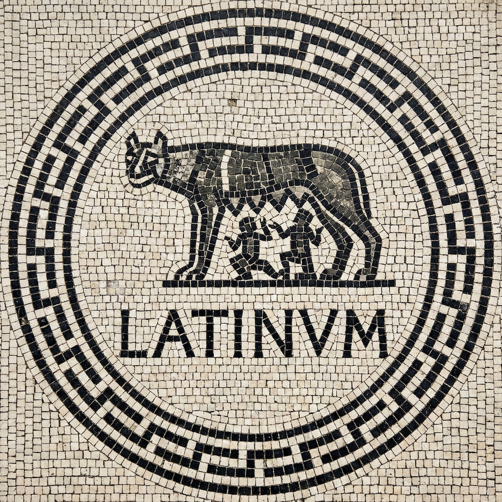

A predictive text Latin keyboard for iOS, with word completion and next-word prediction powered by classical Latin texts.
Latinum is built with privacy by design. Read our full Privacy Policy.
App Store Privacy Label: "Data Not Collected"
Need help? Visit our Support page.
Latinum is released under the open source Apache 2.0 License.